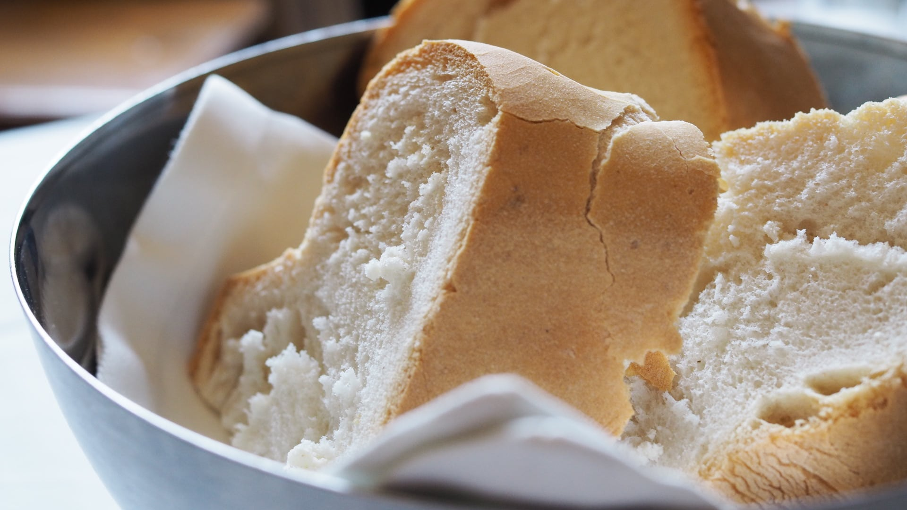

Cuando el calor aprieta apetece algo fresco, una sopa fría famosa en Málaga, la Porra de Antequera es una gran opción. Esta receta es típica en la ciudad malagueña de Antequera. Su preparación no dista mucho de los conocidos salmorejo cordobés o del gazpacho andaluz.
Con un poco de menos de agua que el gazpacho y algo más de espesor que el salmorejo, el resto de ingredientes son bastante parecidos. A diferencia de las otras recetas, que se suelen tomar bebidas como los gazpachos. La Porra de Antequera se toma con cuchara, aunque de igual modo se sirve bien fresquita, pues este plato es tipo de las épocas de más calor. Al ser más espesa se toma como una crema.
Receta de porra antequerana casera
Preparación de la base de la porra antequerana
Ponemos el pan en remojo, yo he dejado un poquito de corteza, pero el resto es todo miga. No debe rebosar de agua, sólo queremos que se empape la miga.
Pelamos los tomates y el diente de ajo. Lavamos y cortamos en pedazos grandes los pimientos. Ponemos a cocer el huevo. Cuando esté listo los sacamos y dejamos enfriar. Reservamos para la guarnición. Picamos el jamón o la guarnición elegida.

Triturado con batidora tradicional
Con batidora tradicional. Escurrimos el pan y lo ponemos en un recipiente bastante grande y profundo.
Añadimos los tomates, los pimientos y el ajo. Lo batimos bien hasta que no queden grumos y la textura sea totalmente líquida y cremosa.
Añadimos un chorro de aceite, el vinagre y la sal al gusto. Batimos de nuevo y lo metemos en el frigorífico al menos 2 horas para tomarlo bien fresquito.
Servimos con la guarnición deseada. En mi caso pongo varios recipientes con la guarnición y cada uno se sirve la que más le gusta.

.jpeg)